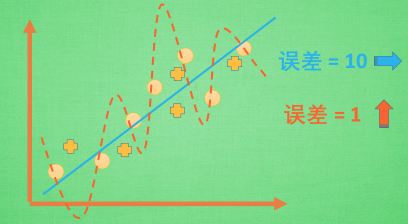
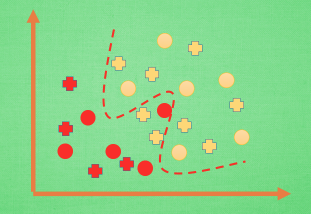
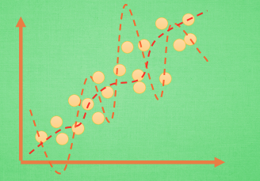
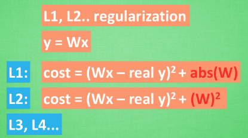
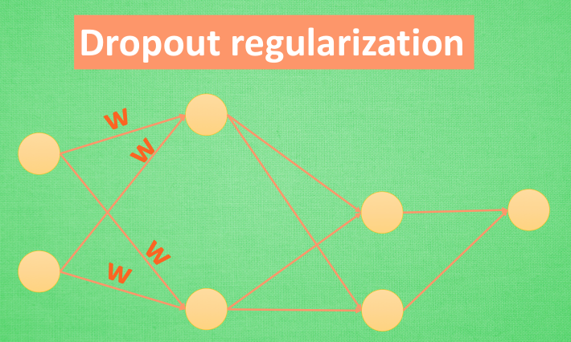

什么是过拟合 (Overfitting)
作者: 莫烦 编辑: 莫烦
学习资料:
今天我们会来聊聊机器学习中的过拟合 overfitting 现象, 和解决过拟合的方法.
注: 本文不会涉及数学推导. 大家可以在很多其他地方找到优秀的数学推导文章.
过于自负
在细说之前, 我们先用实际生活中的一个例子来比喻一下过拟合现象. 说白了, 就是机器学习模型于自信. 已经到了自负的阶段了. 那自负的坏处, 大家也知道, 就是在自己的小圈子里表现非凡, 不过在现实的大圈子里却往往处处碰壁. 所以在这个简介里, 我们把自负和过拟合画上等号.
回归分类的过拟合

机器学习模型的自负又表现在哪些方面呢. 这里是一些数据. 如果要你画一条线来描述这些数据, 大多数人都会这么画. 对, 这条线也是我们希望机器也能学出来的一条用来总结这些数据的线. 这时蓝线与数据的总误差可能是10. 可是有时候, 机器过于纠结这误差值, 他想把误差减到更小, 来完成他对这一批数据的学习使命. 所以, 他学到的可能会变成这样 . 它几乎经过了每一个数据点, 这样, 误差值会更小 . 可是误差越小就真的好吗? 看来我们的模型还是太天真了. 当我拿这个模型运用在现实中的时候, 他的自负就体现出来. 小二, 来一打现实数据 . 这时, 之前误差大的蓝线误差基本保持不变 .误差小的 红线误差值突然飙高 , 自负的红线再也骄傲不起来, 因为他不能成功的表达除了训练数据以外的其他数据. 这就叫做过拟合. Overfitting.

那么在分类问题当中 . 过拟合的分割线可能是这样 , 小二, 再上一打数据 . 我们明显看出, 有两个黄色的数据并没有被很好的分隔开来. 这也是过拟合在作怪.好了, 既然我们时不时会遇到过拟合问题, 那解决的方法有那些呢.
解决方法

方法一: 增加数据量, 大部分过拟合产生的原因是因为数据量太少了. 如果我们有成千上万的数据, 红线也会慢慢被拉直, 变得没那么扭曲 . 方法二:

运用正规化. L1, l2 regularization等等, 这些方法适用于大多数的机器学习, 包括神经网络. 他们的做法大同小异, 我们简化机器学习的关键公式为 y=Wx . W为机器需要学习到的各种参数. 在过拟合中, W 往往变化率比较大. 为了不让W一次性变化太大, 我们在计算误差上做些手脚. 原始的 cost 误差是这样计算 , cost = 预测值-真实值的平方. 如果 W 变得太大, 我们就让 cost 也跟着变大, 变成一种惩罚机制. 所以我们把 W 自己考虑进来 . 这里 abs 是绝对值. 这一种形式的 正规化, 叫做 l1 正规化. L2 正规化和l1 类似, , 只是绝对值换成了平方. 其他的l3.l4 也都是换成了立方和4次方等等. 形式类似. 用这些方法,我们就能保证让学出来的线条不会过于扭曲.

还有一种专门用在神经网络的正规化的方法, 叫作 dropout. 在训练的时候, 我们随机忽略掉一些神经元和神经联结 , 是这个神经网络变得”不完整”. 用一个不完整的神经网络训练一次.
到第二次再随机忽略另一些 , 变成另一个不完整的神经网络. 有了这些随机 drop 掉的规则, 我们可以想象其实每次训练的时候, 我们都让每一次预测结果都不会依赖于其中某部分特定的神经元. 像l1, l2正规化一样, 过度依赖的 W , 也就是训练参数的数值会很大, l1, l2会惩罚这些大的 参数. Dropout 的做法是从根本上让神经网络没机会过度依赖.
如果你觉得这篇文章或视频对你的学习很有帮助, 请你也分享它, 让它能再次帮助到更多的需要学习的人. 莫烦没有正式的经济来源, 如果你也想支持 莫烦Python 并看到更好的教学内容, 赞助他一点点, 作为鼓励他继续开源的动力.